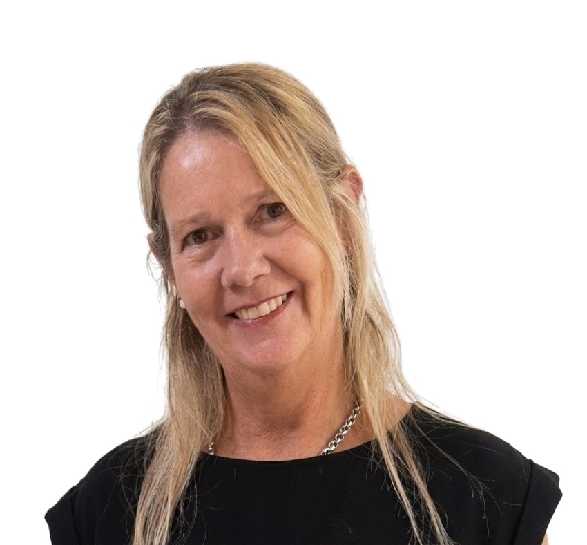
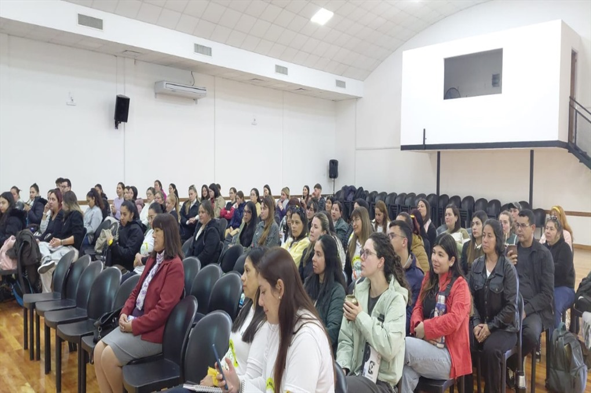

[ 01 ]
Educación
Gestión pedagógica, administración escolar, normativa SAGE y formación docente continua.
Magíster en Gestión y Asesoramiento Pedagógico, Directora de institución educativa, Técnica Superior Operadora en Psicología Social y Secretaria General de la CGT Regional Villaguay (UDA). Espacios de mentoría, capacitación y asesoramiento para personas, instituciones y organizaciones.

Gestión pedagógica, administración escolar, normativa SAGE y formación docente continua.
Coordinación de equipos de trabajo, diseño de proyectos y resolución de conflictos.
Comprensión de procesos grupales, roles, vínculos, Counseling y educación emocional.
Defensa de los derechos laborales, legislación docente, negociación y liderazgo colectivo.
Directora de institución educativa. Trayectoria previa como secretaria y vicedirectora, respaldada por antecedentes de oposición aprobados.
Coordinación departamental del Programa Presentes del Consejo General de Educación durante 2021, 2022 y 2023, articulando proyectos educativos y comunitarios.
Secretaria General de la CGT Regional Villaguay y referente del gremio UDA, generando instancias de formación y defensa de los trabajadores.

Dinámica grupal participativa con docentes en formación.

Encuentros presenciales sobre vínculos, gestión y convivencia.

Construcción de redes vinculares y trabajo cooperativo.

Articulación sindical junto a gremios de Entre Ríos.
Consultas para dictado de talleres, asesoramiento a instituciones o empresas, mentorías individuales y formación gremial.